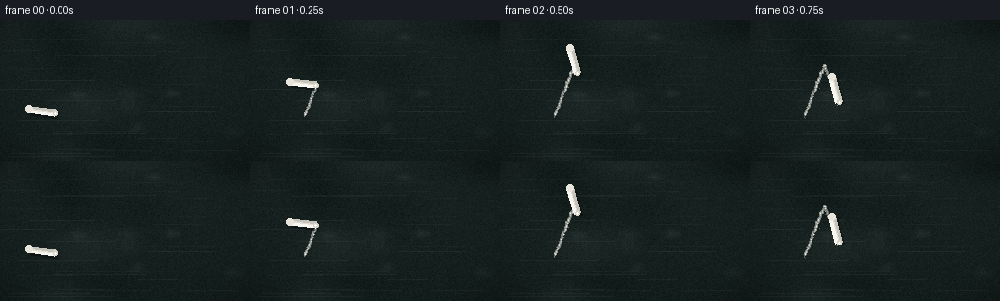
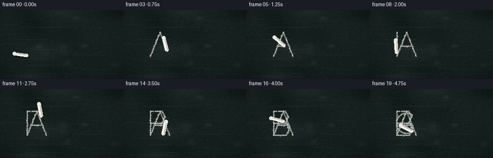

CODING AGENTS AS PIXEL WORLD MODELS
traex/Seed-2.1-Pro-0915 · phygen_031
点击播放 · 原生 RGB 像素
逐轮保存的候选
回放视频、检查图与代码变化。
每份候选均可单独播放。实际图片检查记录在下方工具轨迹中。
候选 01播放与检查图
点击播放 · 原生 RGB 像素


展开代码变化
--- 上一保存版本
+++ 本次保存版本
@@ -0,0 +1,263 @@
+"""Procedural t2v generator: white chalk writing on a rough dark blackboard.
+
+Renders 20 RGB frames (256x144, 4 fps) of a chalk stick progressively
+writing "ABC". No external assets or models are used; everything is built
+from numpy geometry, per-stamp chalk grain, and PIL polygon shading.
+"""
+import math
+
+import numpy as np
+from PIL import Image, ImageDraw
+
+import artifact_io
+
+W, H, N, FPS = 256, 144, 20, 4.0
+CASE_DIR = "."
+
+rng = np.random.default_rng(20261111)
+
+
+# --------------------------------------------------------------------------
+# Blackboard base texture (static across frames so grain never flickers)
+# --------------------------------------------------------------------------
+def build_board():
+ board = np.zeros((H, W, 3), dtype=np.float32)
+ base = np.array([20, 31, 29], dtype=np.float32) # deep green-black
+ board[:] = base
+
+ # Fine per-pixel roughness of the slate surface.
+ grain = rng.normal(0, 1.0, (H, W, 1)).astype(np.float32)
+ board += grain * 3.2
+
+ # Broad cloudy mottling from repeated wiping.
+ yy, xx = np.mgrid[0:H, 0:W].astype(np.float32)
+ for _ in range(14):
+ cx, cy = rng.uniform(0, W), rng.uniform(0, H)
+ sx, sy = rng.uniform(18, 55), rng.uniform(10, 30)
+ blob = np.exp(-(((xx - cx) / sx) ** 2 + ((yy - cy) / sy) ** 2))
+ board += blob[..., None] * rng.uniform(-7, 9)
+
+ # Faint horizontal wiping streaks.
+ for _ in range(26):
+ y = rng.integers(4, H - 4)
+ x0 = rng.integers(0, W - 40)
+ length = rng.integers(25, 110)
+ shade = rng.uniform(4, 11)
+ board[y:y + 1, x0:x0 + length] += shade
+
+ # Ghosts of old erased chalk: soft pale smudges.
+ for _ in range(7):
+ cx, cy = rng.uniform(10, W - 10), rng.uniform(10, H - 10)
+ r = rng.uniform(6, 16)
+ blob = np.exp(-(((xx - cx) / r) ** 2 + ((yy - cy) / (r * 0.55)) ** 2))
+ board += blob[..., None] * rng.uniform(5, 12)
+
+ # Gentle top-light gradient and edge vignette.
+ grad = (1 - yy / H) * 5
+ board += grad[..., None]
+ dist = np.sqrt(((xx - W / 2) / (W / 2)) ** 2 + ((yy - H / 2) / (H / 2)) ** 2)
+ board *= (1 - 0.32 * np.clip(dist - 0.55, 0, 1) ** 2)[..., None]
+
+ return np.clip(board, 0, 255)
+
+
+# --------------------------------------------------------------------------
+# Writing path: dense samples along the letters, with pen-lift moves
+# --------------------------------------------------------------------------
+def dense(poly, step=0.9):
+ pts = []
+ for a, b in zip(poly[:-1], poly[1:]):
+ length = math.hypot(b[0] - a[0], b[1] - a[1])
+ count = max(2, int(length / step))
+ for k in range(count):
+ t = k / count
+ pts.append((a[0] + (b[0] - a[0]) * t, a[1] + (b[1] - a[1]) * t))
+ pts.append(poly[-1])
+ return pts
+
+
+def letter_strokes(ox, oy, scale=1.0):
+ """Polylines for A, B, C in a 40x50 design space."""
+ s = scale
+ tr = lambda pts: [(ox + x * s, oy + y * s) for x, y in pts]
+
+ a = [
+ tr([(0, 50), (20, 0), (40, 50)]),
+ tr([(10, 29), (30, 29)]),
+ ]
+ b = [
+ tr([(0, 0), (0, 50)]),
+ tr([(0, 0), (25, 0), (30, 12), (25, 25), (0, 25)]),
+ tr([(0, 25), (27, 25), (32, 38), (26, 50), (0, 50)]),
+ ]
+ arc = []
+ cx, cy, r = 20, 25, 21
+ for deg in np.linspace(55, 305, 22):
+ rad = math.radians(deg)
+ arc.append((cx + r * math.cos(rad), cy - r * math.sin(rad)))
+ c = [tr(arc)]
+ return a + b + c
+
+
+def build_path():
+ ox, oy, s = 56.0, 46.0, 1.0
+ strokes = letter_strokes(ox, oy, s)
+
+ positions, drawing = [], []
+ prev_end = None
+ for poly in strokes:
+ if prev_end is not None:
+ # Pen-up travel between strokes: tip moves but leaves no mark.
+ for p in dense([prev_end, poly[0]]):
+ positions.append(p)
+ drawing.append(False)
+ for p in dense(poly):
+ positions.append(p)
+ drawing.append(True)
+ prev_end = poly[-1]
+
+ P = np.array(positions, dtype=np.float32)
+ D = np.array(drawing, dtype=bool)
+
+ # Per-sample chalk deposit: varied brightness and occasional dry skips.
+ ink = rng.uniform(0.55, 1.0, len(P))
+ ink[rng.random(len(P)) < 0.12] *= rng.uniform(0.15, 0.45)
+ radius = rng.uniform(1.15, 1.75, len(P))
+ jitter = rng.normal(0, 0.35, (len(P), 2))
+ return P, D, ink, radius, jitter
+
+
+# --------------------------------------------------------------------------
+# Chalk stick overlay
+# --------------------------------------------------------------------------
+def draw_chalk(img_draw, tip, tangent):
+ tx, ty = tangent
+ norm = math.hypot(tx, ty) or 1.0
+ tx, ty = tx / norm, ty / norm
+ # Stick reaches backward from the tip and leans upward.
+ ax, ay = -tx - 0.15, -ty - 1.0
+ an = math.hypot(ax, ay)
+ ax, ay = ax / an, ay / an
+ px, py = -ay, ax # perpendicular
+
+ length, width = 27.0, 7.0
+ tip = (tip[0], tip[1])
+ far = (tip[0] + ax * length, tip[1] + ay * length)
+
+ def corner(base, side):
+ return (base[0] + px * side * width / 2,
+ base[1] + py * side * width / 2)
+
+ poly = [corner(tip, -1), corner(tip, 1), corner(far, 1), corner(far, -1)]
+
+ # Soft contact shadow on the board.
+ shadow = [(x + 2.2, y + 2.6) for x, y in poly]
+ img_draw.polygon(shadow, fill=(0, 0, 0, 90))
+
+ # Body with a light side and a shaded side for a cylindrical read.
+ img_draw.polygon(poly, fill=(226, 224, 214, 255))
+ lit = [corner(tip, -1), corner(tip, -0.15), corner(far, -0.15), corner(far, -1)]
+ img_draw.polygon(lit, fill=(247, 246, 240, 255))
+ shade = [corner(tip, 0.25), corner(tip, 1), corner(far, 1), corner(far, 0.25)]
+ img_draw.polygon(shade, fill=(198, 196, 186, 255))
+
+ # Rounded far end and worn tip.
+ fr = corner(far, 0)
+ img_draw.ellipse([fr[0] - width / 2, fr[1] - width / 2,
+ fr[0] + width / 2, fr[1] + width / 2],
+ fill=(232, 230, 220, 255))
+ img_draw.ellipse([tip[0] - 2.2, tip[1] - 2.2, tip[0] + 2.2, tip[1] + 2.2],
+ fill=(214, 211, 201, 255))
+ # Bright contact point where chalk meets slate.
+ img_draw.ellipse([tip[0] - 1.1, tip[1] - 1.1, tip[0] + 1.1, tip[1] + 1.1],
+ fill=(252, 251, 246, 255))
+
+
+# --------------------------------------------------------------------------
+# Main render
+# --------------------------------------------------------------------------
+def main():
+ board = build_board()
+ P, D, ink_vals, radii, jitter = build_path()
+ m = len(P)
+
+ # Disk offsets used for each chalk stamp.
+ doff = [(dx, dy) for dy in range(-2, 3) for dx in range(-2, 3)
+ if dx * dx + dy * dy <= 4]
+
+ # Dust particles spawned at the moving tip.
+ particles = [] # (spawn, x, y, vx, vy, life, brightness)
+ for fi in range(N):
+ k = max(1, int(round(fi / (N - 1) * (m - 1)))) + 1
+ k = min(k, m)
+ tip = P[k - 1]
+ if D[k - 1]:
+ for _ in range(4):
+ particles.append((
+ fi,
+ tip[0] + rng.normal(0, 2.0), tip[1] + rng.normal(0, 2.0),
+ rng.normal(0, 0.35), rng.uniform(0.15, 0.8),
+ rng.integers(5, 10), rng.uniform(0.25, 0.7),
+ ))
+
+ chalk_color = np.array([238, 236, 228], dtype=np.float32)
+ frames = []
+
+ for fi in range(N):
+ k = max(1, int(round(fi / (N - 1) * (m - 1)))) + 1
+ k = min(k, m)
+
+ # Accumulate chalk deposits up to the current path position.
+ deposit = np.zeros((H, W), dtype=np.float32)
+ for j in range(k):
+ if not D[j]:
+ continue
+ x = P[j, 0] + jitter[j, 0]
+ y = P[j, 1] + jitter[j, 1]
+ r = radii[j]
+ xi, yi = int(round(x)), int(round(y))
+ for dx, dy in doff:
+ rr = math.hypot(dx, dy)
+ if rr > r:
+ continue
+ px, py = xi + dx, yi + dy
+ if 0 <= px < W and 0 <= py < H:
+ edge = max(0.0, 1.0 - rr / max(r, 0.01))
+ val = ink_vals[j] * (0.45 + 0.55 * edge)
+ if val > deposit[py, px]:
+ deposit[py, px] = val
+
+ frame = board * (1 - deposit[..., None]) + chalk_color * deposit[..., None]
+
+ # Drifting chalk dust.
+ for spawn, x, y, vx, vy, life, bright in particles:
+ age = fi - spawn
+ if age < 0 or age > life:
+ continue
+ px = x + vx * age
+ py = y + vy * age + 0.12 * age * age
+ alpha = bright * (1 - age / life)
+ xi, yi = int(round(px)), int(round(py))
+ if 0 <= xi < W and 0 <= yi < H:
+ frame[yi, xi] = frame[yi, xi] * (1 - alpha) + chalk_color * alpha
+
+ frame = np.clip(frame, 0, 255).astype(np.uint8)
+ overlay = Image.new("RGBA", (W, H), (0, 0, 0, 0))
+ draw = ImageDraw.Draw(overlay)
+
+ lo, hi = max(0, k - 5), min(m - 1, k + 2)
+ tangent = P[hi] - P[lo]
+ draw_chalk(draw, P[k - 1], tangent)
+
+ composed = Image.alpha_composite(
+ Image.fromarray(frame).convert("RGBA"), overlay
+ ).convert("RGB")
+ frames.append(np.asarray(composed, dtype=np.uint8))
+
+ frames = np.stack(frames, axis=0)
+ artifact_io.save(frames, CASE_DIR)
+ print(f"Saved {frames.shape} frames to {CASE_DIR}")
+
+
+if __name__ == "__main__":
+ main()
可观测工具轨迹
实际执行的命令与返回图片。
命令 1exit 0
/bin/bash -lc 'cat prompt.txt GENERATION_RULES.md task_spec.json 2>/dev/null; ls -la'
命令 2exit 0
/bin/bash -lc 'cat artifact_io.py'
命令 3exit 0
/bin/bash -lc 'python -c "import numpy, PIL; print(numpy.__version__, PIL.__version__)"'
命令 4exit 0
/bin/bash -lc 'time python generate.py'
视觉工具实际返回图片 1

保存候选 1 份；完成命令 4 次；可验证图片返回 1 张。原始 API 响应与完整日志保留在本地。